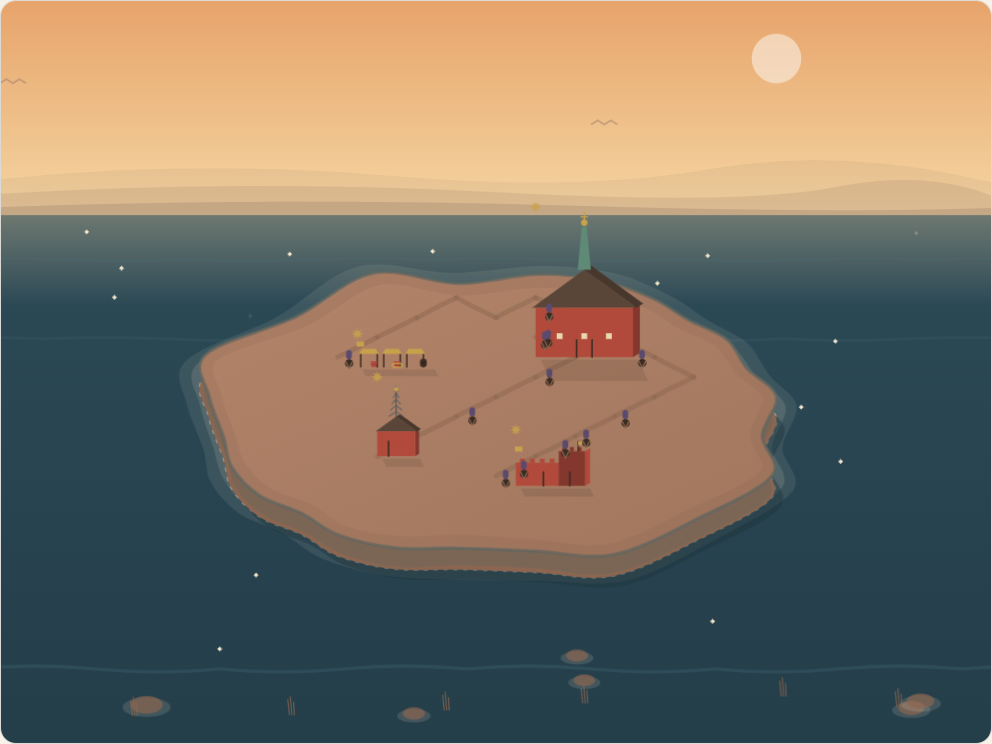
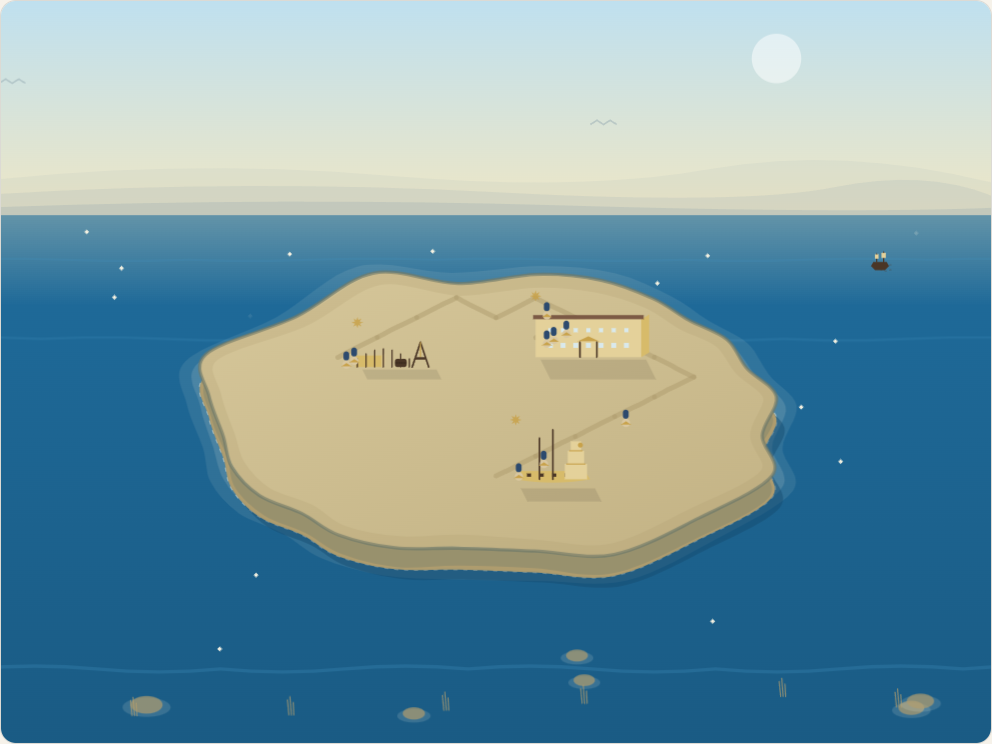
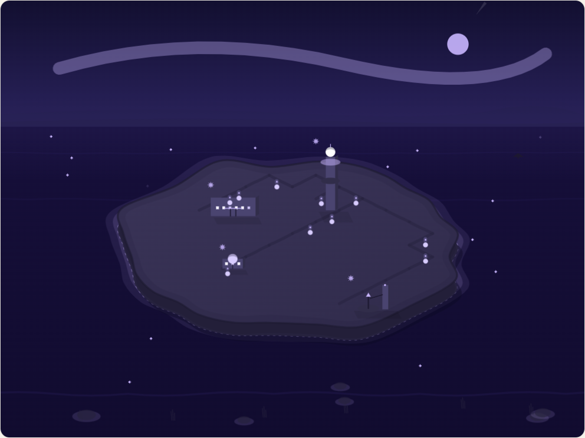

Swedish
Learn Swedish. Build Stockholm.
Five-minute lessons from SFI A to SVA grund, and a city that grows from a first settlement on the island to a city among the stars.
400 lessons
5 400 words
10 eras
offline PWA


